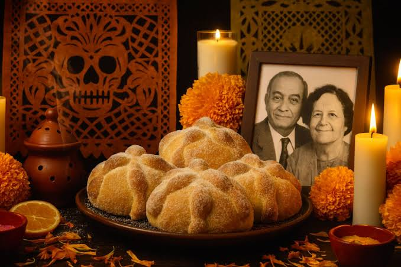

Es una tradición mexicana que consiste en colocar una ofrenda para recordar y honrar a nuestros familiares y seres queridos que han fallecido.
Se hace para recordar a las personas que ya no están con nosotros. Según la tradición, sus almas regresan durante el Día de Muertos para visitar a sus familias.
Las flores guían a las almas, las veladoras representan la luz, el agua calma la sed, el pan de muerto es una ofrenda y las fotografías recuerdan a nuestros seres queridos.
Los altares pueden tener 2, 3 o 7 niveles. Se colocan fotografías, flores, veladoras, comida y bebidas. Cada familia lo decora de acuerdo con sus costumbres.

El altar de muertos es una tradición muy bonita de México porque nos permite recordar con amor a las personas que ya fallecieron y mantener vivas nuestras costumbres.